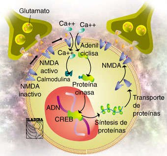

A partir de esta nueva perspectiva tecnológica trabaja sobre la neurotransmisión y otras funciones cerebrales. Esta investigación se relacionó con la identificación de una proteína de PM 56 KDa que cambia su estado de fosforilación por la acción del método creado por el Dr. Redondo. Este hallazgo sugiere que esta proteína es parte de la cascada de amplificación de señales relacionada con la formación de circuitos neuronales en la corteza cerebral en desarrollo, sin excluir la importante acción fisiológica que ejerce en el cerebro maduro. Se considera el trabajo del Dr. Redondo- al diseñar eficazmente un método que actúa sobre el SNC a partir de una técnica programada de tipo Química-molecular cuyos componentes inocuos, sin efectos secundarios, son un hallazgo de real jerarquía en Argentina y sin precedentes, es decir que su diseño es único.
Técnica programada de tipo Químico-Molecular. Incidencia directa: nivel motriz y nivel intelectual Niños y Adultos Destacados efectos en: Coordinación de movimientos corporales (equilibrio y marcha)-Lenguaje articulado-Graves alteraciones de control de esfínteres Cuadros con: Coeficiente Intelectual Disminuido- Hiperkinesia- Alteraciones de la Concentración Intelectual. Incidencia directa en Conexiones Neurales –repercusión directa en capacidad intelectual Este profesional recupera los viejos cánones del investigador médico, desde su postura de investigar y hacer consultorio, en contraposición al frío esquema tradicional que aísla al científico entre las cuatro paredes del laboratorio y lo aleja de la realidad. Sus logros son un ejemplo de los resultados a los que, aún en el marco de carencia tecnológica y financiera, se pueden obtener teniendo en claro la meta y poniendo, para llegar a ella, actitud de servicio, adquisición de conocimientos, voluntad de trabajo además de responsabilidad por el otro.
Datos del Profesional: Nacido en la ciudad de Santa Fe, reside hoy, en la ciudad de Reconquista. Graduado como Psicólogo en 1972 y graduado como Médico en 1981. Actividad en la investigación: Comienza con trabajo de tesis sobre Química Biológica Molecular. Observa que se reiteraban errores de diagnóstico en cuadros confundidos como Psíquico y que en realidad respondían a un Sustrato Neuro-funcional, convirtiéndose esto en un 1er aporte del investigador. El Segundo aporte fue el diseño de nuevos Protocolos de Combinación de elementos y sustancias. Es así como, en 1988, su trabajo interesa a los Doctores Mario Bunge ( residente en Canadá) y Serroni Copello (Bs. As.) quienes, no sólo apoyan esta investigación sino que también inducen a darle continuidad.
La Técnica: Fue diseñada para intervenir sobre el Neurometabolismo: neurotransmisión (punto central del metabolismo cerebral), fosforilación de proteínas cerebrales, membrana celular, respuesta al fosfatidil inositol y acción sobre los denominados “segundos mensajeros” químicos.
Área Neurosiquiatría Síndrome Autista Se destaca que: Se lograron Significativas Mejoras en niños con Conductas Autistas. Sobre todo en aquellos que, estando diagnosticados como Autista, presentaban un “cuadro neurofuncional” con comprobación Electroencefalogáfica y / o RMN con Espectoscopia.- Niños: Logros comprobados en: Síndrome Autista: Se destaca que se lograron Significativas Mejoras en niños con Conductas Autistas, sobre todo en aquellos que, estando diagnosticados como Autista, presentaban un “cuadro neurofuncional” con comprobación Electroencefalogáfica y / o RMN con Espectoscopia. Cuadros Fóbicos Adultos: Cuadros Depresivos Cuadros Fóbicos Cuadros Obsesivos; con significativas evoluciones.
Los avances en el campo de la Biología ayudaron a comprender desde otra perspectiva el funcionamiento y actividad cerebral. Tales hallazgos permitieron crear compuestos químicos para contrarestar la disfunción de neurotransmisores. A la electroencefalografía moderna establecida por Hans Berger en 1929, se sumaron en la actualidad nuevas técnicas dinámicas como la tomografía, la magnetoencefalografía y la resonancia magnética funcional.
Habla la mamá: “N, antes de empezar su tratamiento, no apoyaba el pie izquierdo (apoyaba medio pie debido a que los tendones estaban retraídos). Intentaba levantarse sola pudiéndola hacer muy pocas veces. Le faltaba flexibilidad en miembros superiores, inferiores y cintura. Hoy Lunes 22 de abril según el traumatólogo, N está mucho mejor, logró mayor independencia, apoya completo el pie izquierdo, mejor manejo de cintura, menor torpeza en sus movimientos, mayor agilidad. Según el neurólogo de cabecera que la revisó el viernes 19 de abril coincide con el traumatólogo. Según el kinesiólogo (quien la atiende desde que tenía 1 año y medio) su mejoría en este último mes es de destacar.
Características del proceso: Se presenta 1ra Visita: Hipotonía, Problemas para la deglución (mastica y deglute con dificultad)-Desorganización general en los movimientos corporales. Primeras mejoras: Mayor conexión (mira y atiende).Trata de tomar objetos- Coordinación: Mayor organización en los movimientos corporales (brazos piernas y acompaña con la mirada) Mejoría general en: Motricidad-intelectualidad. hipotonía (marcadamente)-marcha sincronizada- mayor concentración-mayor fortaleza física (estado general) no se dan bronquitis a repetición.
K llega a la consulta con el estado que a continuación detallamos: Lesión hemisferio izquierdo. Trastorno de Marcha en pierna derecha manifestándose una atrofia y espasticidad. Brazo derecho también manifiesta contractura y espasticidad. Mano del mismo brazo no puede moverla por la contractura. Trastorno en la articulación de palabras. Insomnio Un trazado de EEG.que mostraba una Lesión Témporo-Parietal Izquierdo. TAC compromiso arteria cerebral anterior.
Trastornos: articulación de palabras. Debilidad Motriz: Generalizadas. Trastorno de Marcha y equilibrio. Desorientación Témporo - Espacial. Disminución significativa de la AUDICION. EEG: Desorganización Generalizada. A los 45 días después de iniciado el tratamiento. Mayor Organización Motriz. Mayor Conexión: Atención y Concentración. Señala las cosas que desea. Intenta decir algunas palabras.
Los Cuadros Tratados, preferentemente, con
este procedimiento son:
1)-Trastornos Neuromadurativos
2)-Problemas de Aprendizaje-Déficit Atencional-Hiperkinesis.(SDAH)
3)-Disfunción Cerebral
4)-Lesión Cerebral
5)-Epilepsias-Cuadros Convulsivos.
Pacientes: NIÑOS
Y ADULTOS
El tratamiento está organizado en dos etapas funcionales:
Una vez que el paciente
inicia el tratamiento obtiene resultados promisorios entre los sesenta y noventa
dìas . El mismo consiste en una sola toma diaria (de 10 a 15 cc), el que se
acompaña con la lectura de señales cerebrales evocadas por distintas técnicas.
El tiempo está directamente relacionado con el paciente (características psíquicas
y orgánicas) y la patología (recuperación de signos funcionales), pero puede
estipularse en términos generales de dos a cuatro o cinco años.
El objetivo del tratamiento es “que modifique el trazado electroencefalográfico
en un sentido evolutivo y positivo”. Se pueden aplicar ocho fórmulas diferentes
en: Trastornos Neuromadurativos, Lesión Cerebral, y en Epilepsias, sobre todo
en las Atípicas o de difícil manejo (refractarias), con un gran éxito ya que
se produce un espaciamiento importante en la manifestación delas crisis.
Se tiende a garantizar el alta en trastornos madurativos e importantes recuperaciones
en Lesiones cerebrales. En cambio en las Epilepsias es reservado, pero se puede
asegurar una mejoría sustancial .También se puede asegurar en este último caso
una reducción de los medicamentos convencionales permitiendo al paciente recuperar
su capacidad intelectual y laboral en muchos casos.
Esta nueva perspectiva clínica y esta investigación que permitió la conciliación
de un compuesto químico y la lectura encefalográfica, despertó interés en Instituciones
científicas de Europa e investigadores del Canadá.
|

En
la figura: A
modo didáctico el compuesto químico molecular tiene acciones a este nivel:
Desde el punto de vista molecular, la plasticidad consiste en un fortalecimiento
de las sinapsis mediado por señales intracelulares, transcripción de genes
y síntesis de proteínas estructurales que convertirán las terminales presinápticas
y postsinápticas en estructuras robustas. |